From a product people understood to a product they trusted enough to fund
When I joined CREB, the product promise was clear: make real-estate-backed bonds accessible to everyday investors. The experience around that promise was the problem. Users signed up, looked around, and hesitated before depositing money.
I redesigned the product around a simple operating principle: every screen should lower uncertainty before asking for commitment. That meant clearer onboarding, visible verification progress, an investment dashboard that put ownership and earnings first, purchase and withdrawal flows that showed the math, and a reusable in-app design system for consistency across releases.

The business moved when the trust moments got clearer
The work shipped as a sequence of focused releases across the funnel, not a single cosmetic refresh. The strongest gains came from making high-stakes steps feel predictable: identity verification, bank connection, purchase review, recurring investment, daily interest, and withdrawal.
I owned the product experience from map to shipped screen
- Mapped the full CREB platform: onboarding, dashboard, investing, withdrawal, reports, rewards, support, profile, and account settings.
- Created low-fidelity and high-fidelity wireframes for the mobile-first product flow before final UI work.
- Designed the in-app system: color tokens, typography rules, KPI cards, action cards, forms, steppers, transaction rows, empty states, confirmation modals, and bottom navigation.
- Redesigned the dashboard, buy bonds, withdrawal, auto recurring, reinvesting, calculator, statements, referral, Plaid, and success/failure states.
- Partnered with engineering on edge cases, data states, responsive behavior, and release-by-release polish.
The product worked, but the experience leaked confidence
CREB asks users to do something emotionally heavier than tapping a normal app button: connect a bank account and invest real savings into an asset class many had never bought before. That exposed three gaps.
I mapped the product before redesigning the interface
The sitemap became the source of truth. It forced every feature to sit in a clear mental model: dashboard and overview, investing and redemption, account and profile, rewards, support, settings, and global elements.

Then I translated the structure into a user-flow map. This helped the team see onboarding, KYC, Plaid connection, first bond purchase, withdrawal, reports, rewards, and support as connected journeys instead of disconnected tickets.

The first goal was flow clarity, not visual polish
I moved through low fidelity first so the team could argue about hierarchy, sequence, and missing states before we spent attention on style. The early work covered landing, sign up, OTP, dashboard, portfolio overview, statements, transactions, daily interest, purchase, withdrawal, recurring, reinvest, IRA, profile, beneficiary, bank changes, rewards, calculator, chat, FAQ, and contact support.
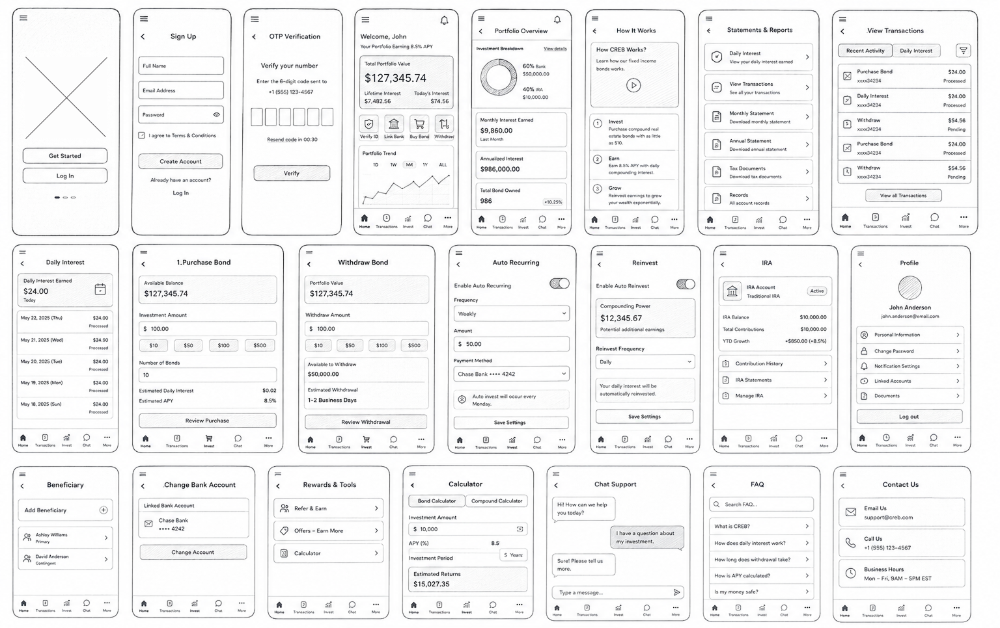
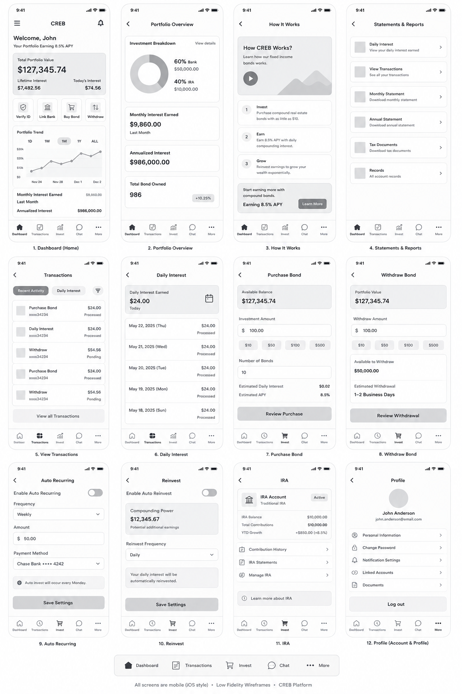
An in-app system for financial confidence
CREB needed more than finished screens. It needed a system that made every new release feel trustworthy by default. The system is deliberately practical: financial colors with clear semantic use, compact type, predictable cards, strong form fields, visible step progress, confirmation states, and transaction rows that separate status from amount.
Core Tokens
Reusable Components
Purchase, processed
The rule I used for components was simple: the user should never have to hunt for amount, status, account, timing, or the next action.
The dashboard became the product's trust hub
The dashboard leads with portfolio value, interest earned, bond ownership, request actions, monthly interest, portfolio trend, referral prompts, menu shortcuts, and recent activity. It gives the user enough density to feel in control, but keeps the priority clear: what I own, what it earns, what I can do next.
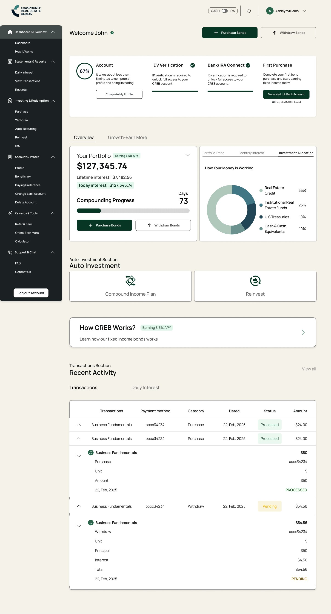
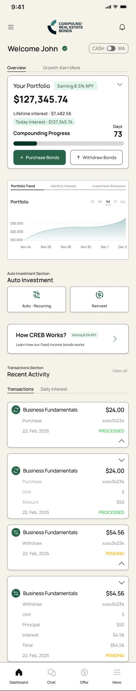

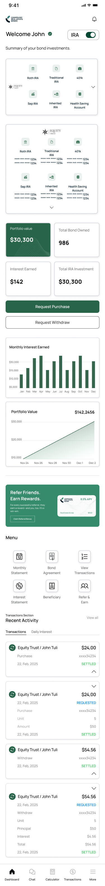
Plaid and identity checks needed explanation before action
Bank connection and identity verification are friction by nature. I treated those screens as reassurance moments: explain why the step exists, show progress, name Plaid clearly, and offer a direct primary action only after the user has the context.

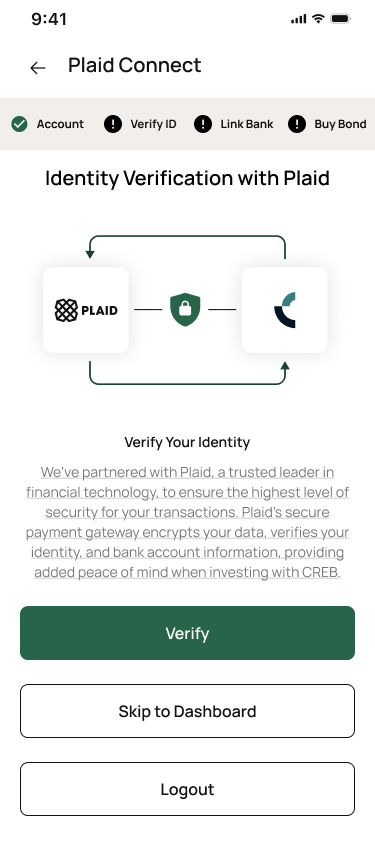
Buying bonds had to keep the math visible
The purchase flow was redesigned around live financial clarity: units, deposit amount, purchase amount, interest rate, purchase date, daily interest payout, total to pay, and final confirmation. The confirmation modal restates the commitment before the user acts.
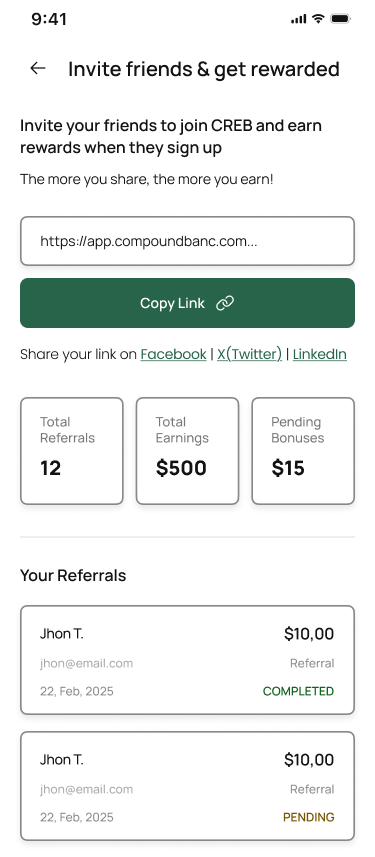
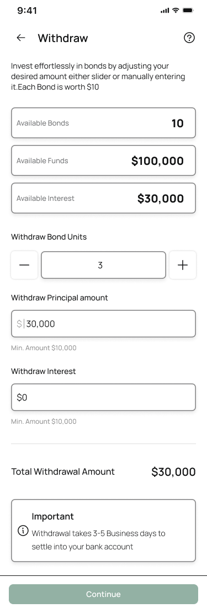
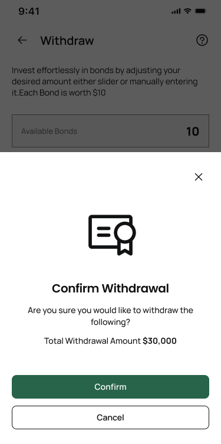

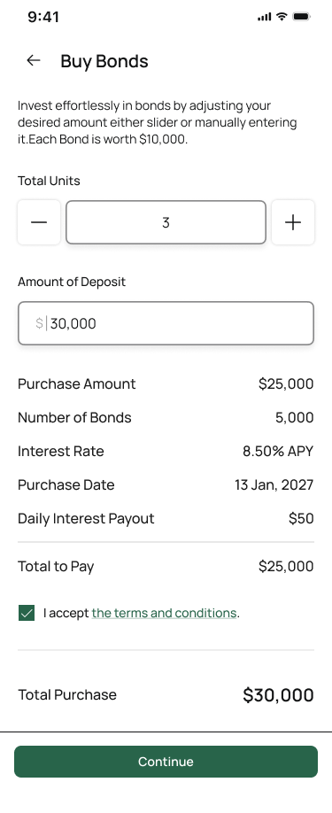
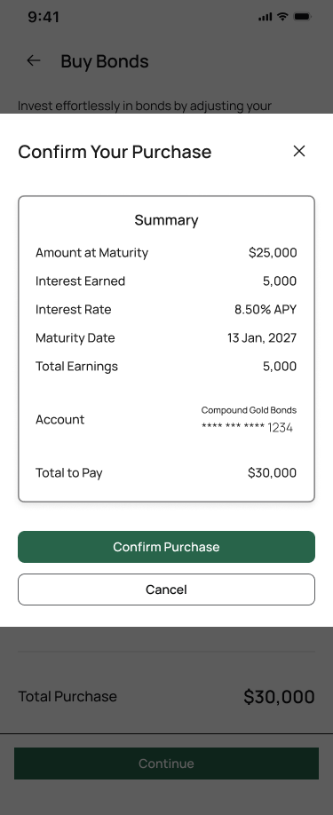
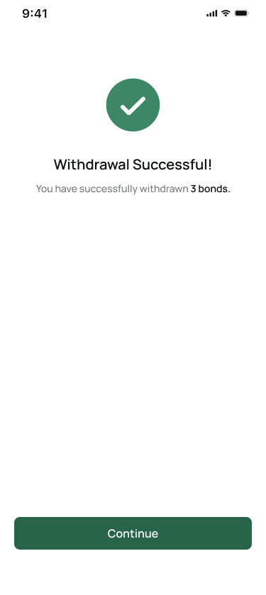
Withdrawal is where trust gets tested
Withdrawal was the most sensitive flow because it reverses the core promise: users need confidence that money can come back out. I rebuilt the flow around connected inputs for bond units, principal, interest, total withdrawal amount, timing, confirmation, help, and success or failure states.
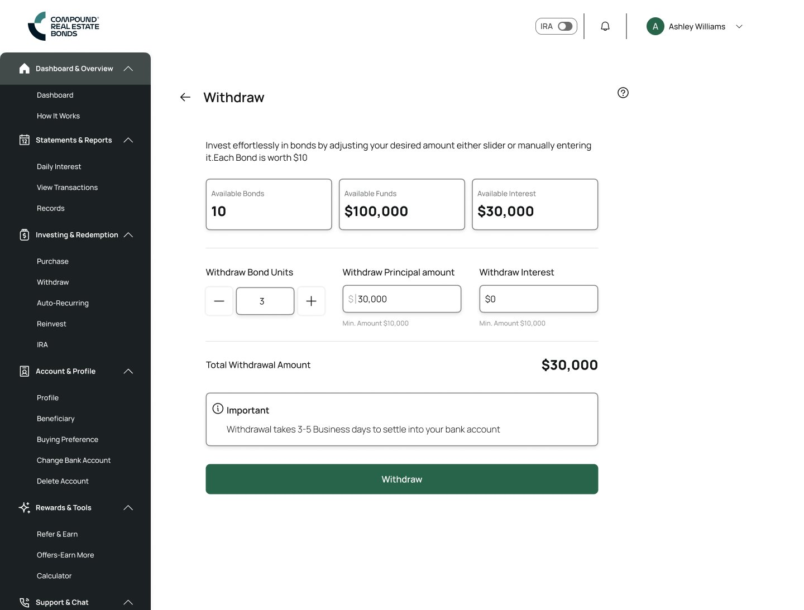
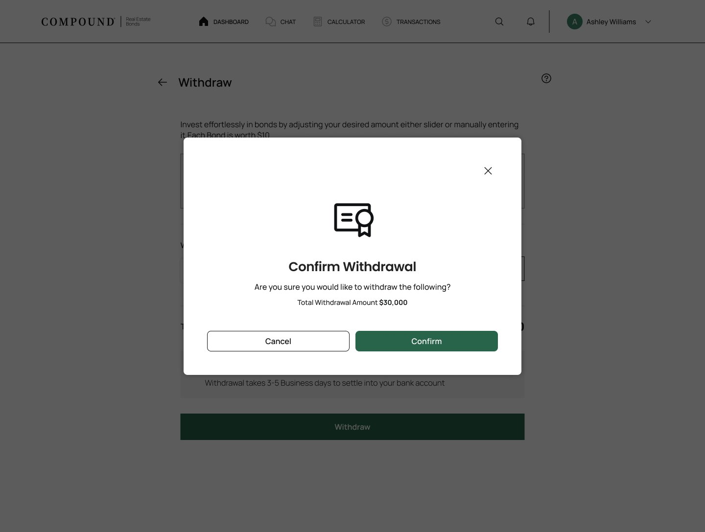
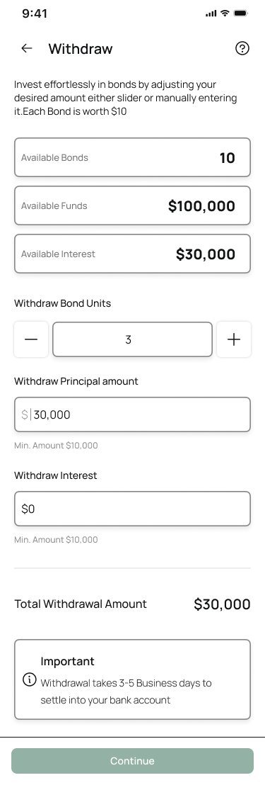
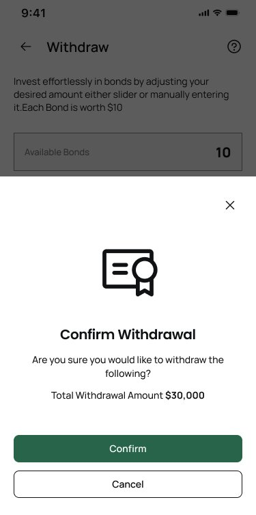
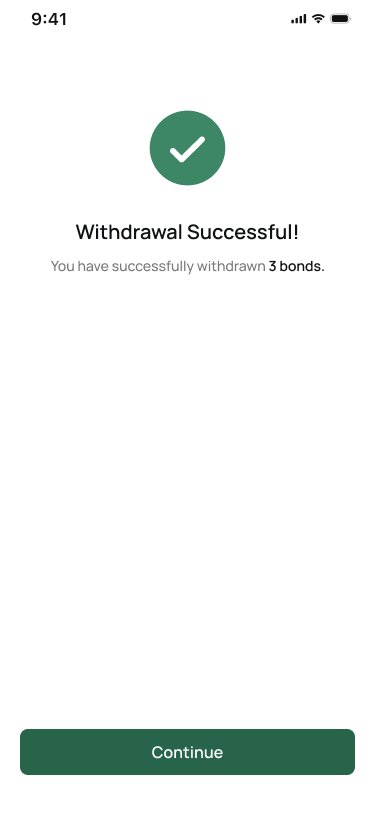
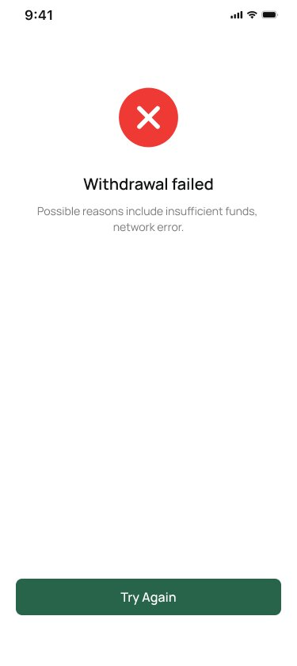
Daily interest, calculators, reinvestment, and rewards kept the product alive after purchase
Once a user buys a bond, the product has to keep explaining value. I used daily interest and statements to make earnings visible, calculators to model future value, reinvestment to make compounding feel actionable, and referral rewards to create a second reason to return.
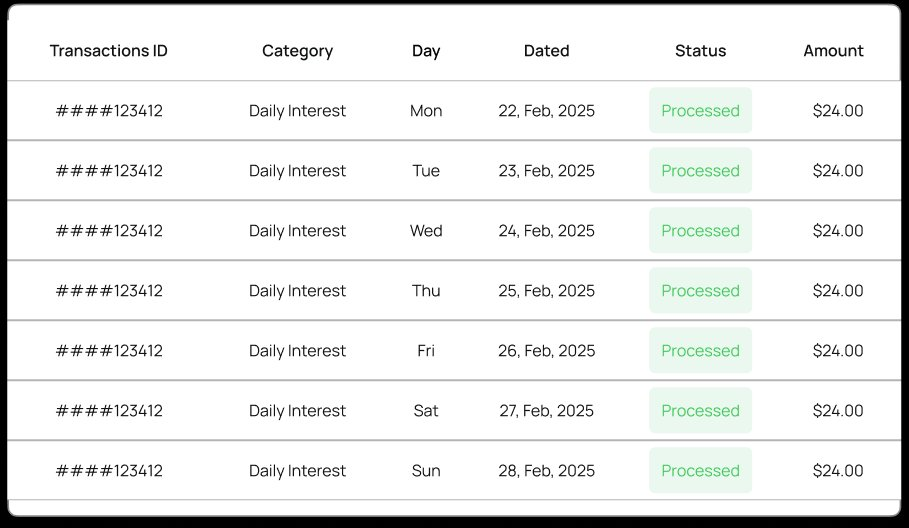
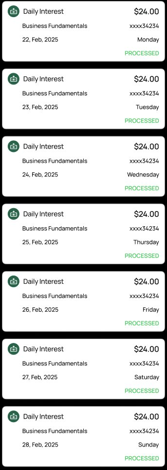
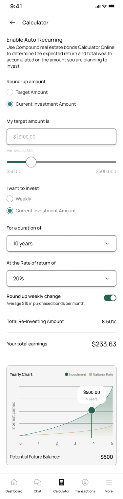
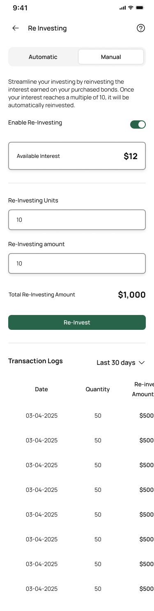
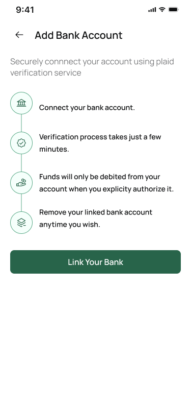
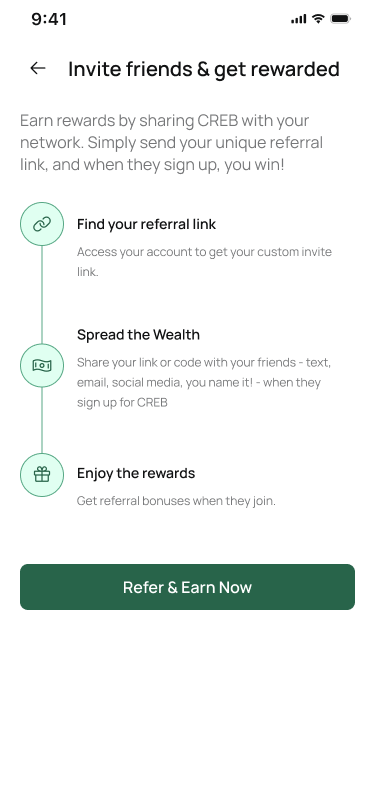
The redesign made CREB feel like one coherent financial product
The page-level improvements mattered, but the real shift was systemic. The dashboard, KYC, Plaid, purchase, withdrawal, statements, calculator, reinvestment, and rewards all began using the same visual language and the same trust logic.
The biggest design material was not color or layout. It was confidence.
CREB taught me that fintech design is rarely won by one beautiful screen. It is won in small moments: a clear stepper, a readable amount, a button that says exactly what happens, a confirmation modal that repeats the important numbers, a success state that closes the loop, and a system that keeps doing those things consistently.
Coming from engineering helped me understand how the product was built. Designing CREB taught me how to see where the system quietly failed the person using it, and how to rebuild that trust screen by screen.